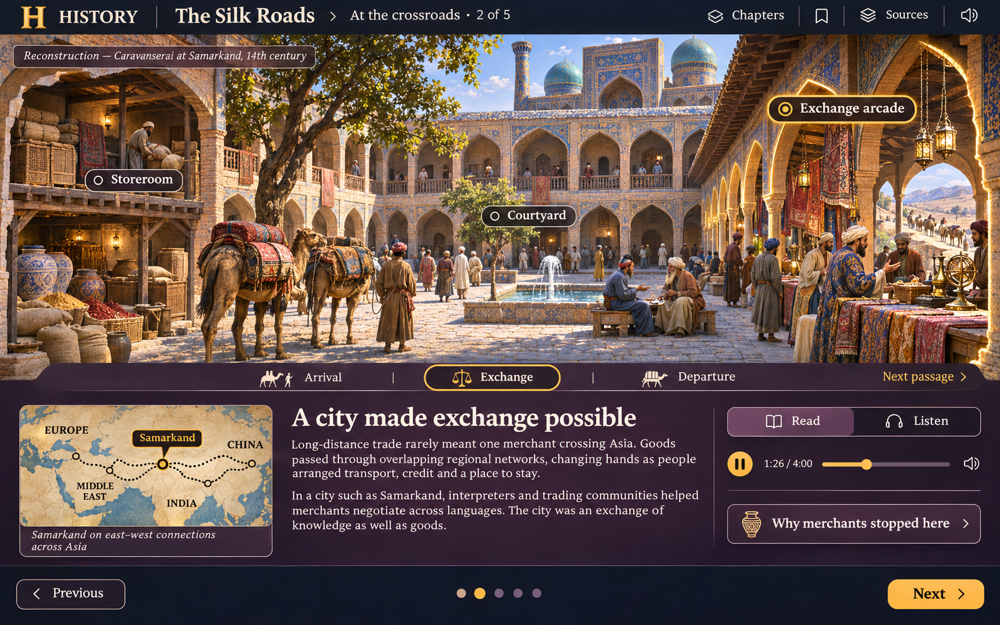
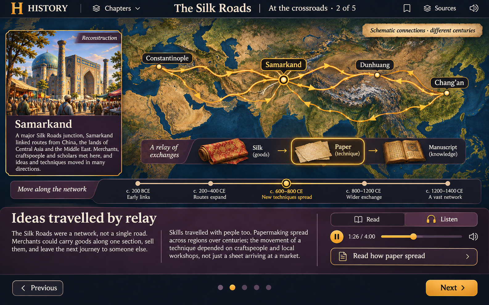
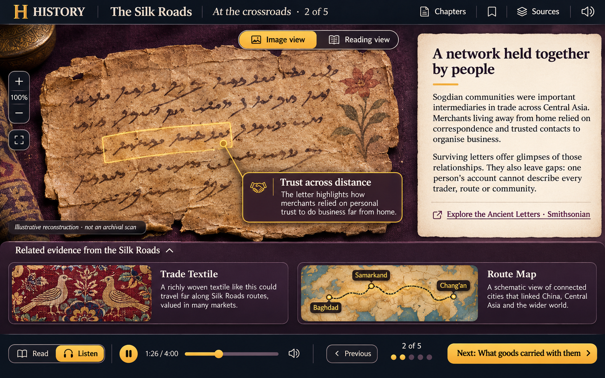
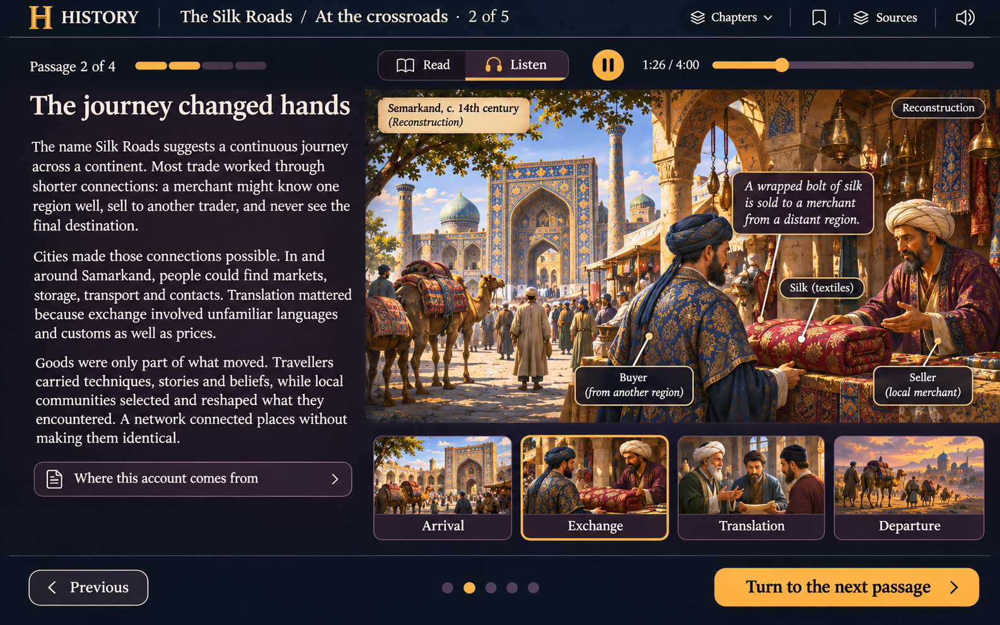

Four ways into the same history.
Alternatives for the lesson player, using the same chapter: The Silk Roads · At the crossroads. These are generated visual concepts for choosing a direction. The application has not been changed.
Every direction keeps the history visible, allows reading at your own pace, and makes listening optional. Artwork here is illustrative reconstruction; generated maps and documents are design material, not historical evidence.
1. Inside the scene
The historical place becomes the learning surface. Inspect a meaningful part of the city and read the explanation beside it. Different passages introduce newly composed views, rather than reusing the preview cover.

The learner does: inspect the exchange arcade, understand why a city enabled trade, then move to the next explanatory passage. No mandatory hotspot hunt.
Audio and mobile: narration follows the current passage and can be interrupted. On mobile the selected scene and readable explanation stack; inspecting a place retains your reading position.
2. Follow the route
The map explains a historical process. Following an object or technique changes the route, places and explanation together. Its value is seeing relationships that prose alone makes difficult.

The learner does: follow paper through a network and read why skills travel differently from goods. Changing an object changes the explanation, not just a selection colour.
Audio and mobile: seek or move to the next passage immediately. On mobile the map focuses on the current region above the reading; a larger map is optional.
3. Open the evidence
A document or object leads the scene. Close inspection sits beside interpretation: what it tells us, what it cannot tell us, and where to examine the actual source.

The learner does: inspect a detail, read its historical significance and uncertainty, then open an institutional source or continue. Real archival material would carry its actual attribution.
Audio and mobile: listening reads the interpretation; inspecting the object pauses it. Mobile switches between close inspection and reading without losing place.
4. Illustrated chapters
A reading-led experience with substantial prose and a sequence of authored illustrations. Each passage has its own composition. The learning comes from a clear narrative, not an interaction added to every screen.

The learner does: read a complete idea, inspect details in the accompanying art, and turn to the next passage. Maps or documents appear when the narrative needs them.
Audio and mobile: Read and Listen share a passage position; no forced wait. Mobile becomes an illustrated reading page with compact passage navigation.